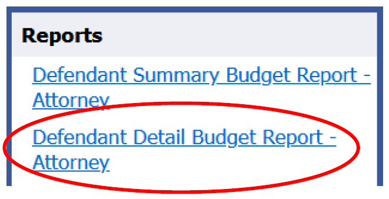

Basic CJA Billing for Attorneys
Setting Up an eVoucher Account and Appointments
All individuals working on CJA cases must have an eVoucher account to submit their claims for payments. Attorneys appointed to CJA cases also use eVoucher to facilitate funding requests for service providers, including paralegals, investigators, mitigation specialists, associate counsel, experts, interpreters, and court reporters. To set up an eVoucher account or request a new eVoucher appointment, contact Edith Nakada at Edith_Nakada@cacd.uscourts.gov. Duty-day appointments will be automatically created in eVoucher. However, please email Edith Nakada directly to create an eVoucher appointment in the following situations:
- Special appearance appointments
- Appointments by a district judge
- Appointments where your client is a target of an investigation
- Appointments on CVB cases
- Missing eVoucher appointments one week after having been appointed
Hourly Rates
Hourly rates for CJA panel attorneys are set by the Judicial Conference of the United States and are usually adjusted each year. The new rates apply for services performed on or after the effective date. Current and historical non-capital case rates are available in § 230.16 of the CJA Guidelines. For death penalty cases and federal capital habeas corpus proceedings, the presiding judge sets the hourly rate, not to exceed the amount in § 630.10.10.
Billing Deadlines
Non-Capital Cases: Attorneys appointed on non-capital cases must submit their vouchers for payment quarterly on a CJA-020 voucher form in eVoucher. CJA-020 vouchers must be submitted by the 15th of their designated billing month, as provided in the chart below. Any voucher returned to counsel for correction must be resubmitted within 30 days of the rejection date. Vouchers submitted after a deadline can only be paid with the approval of the CJA Committee Chair. A letter addressed to the CJA Committee Chair showing good cause must be submitted with the voucher by uploading the “late letter” to the Documents tab in eVoucher. Preoccupation with pressing professional demands does not establish good cause.

Exceptions:
- Billable Hours Under $500: Do not submit an interim voucher if the total amount claimed (excluding expenses) is less than $500. Instead, combine claims with the next quarter’s claims, then submit the voucher during the upcoming billing month if the billable hours exceed $500.
- Final Vouchers: For completed cases or cases in which the attorney has been terminated for any reason, the final voucher may be submitted immediately regardless of its amount and must be submitted no later than 45 days after the attorney ceases representation. Therefore, counsel may be required to submit a final voucher before the interim quarterly due date.
Capital Prosecution Cases: The Federal Public Defender is responsible for making a recommendation to the presiding judge to appoint learned counsel in capital prosecution cases. Attorneys appointed on capital cases should submit their vouchers for payment monthly on a CJA-30 voucher form in eVoucher. All capital cases must be budgeted. The requirements for budgeting are addressed in Section II.I of the CACD CJA Billing Guide, below.
Standard for Voucher Review
Vouchers are reviewed for policy compliance and reasonableness. See generally, § 230.33.10. Deductions will be made based on mathematical errors, instances in which work billed is not compensable, instances in which work billed was not undertaken or completed, and instances in which the hours billed are clearly in excess of what was reasonably required to complete the task. Please review the Ninth Circuit CJA Compensability Handbook for a detailed account of non-compensable work. The CJA Supervising Attorney conducts a reasonableness review over all vouchers submitted for payment. Congress enacted the Criminal Justice Act to both “assure adequate representation in the Federal courts of accused persons with insufficient means,” and “afford[] reasonable compensation to counsel who are assigned.” See In re Smith, 586 F.3d 1169, 1175 (9th Cir. 2009). Therefore, the appropriate standard of review for payment in CJA cases becomes not “what hours were actually expended,” but “what hours were reasonably expended completing work necessary for adequate representation.” Id., see also, 18 U.S.C. §3006A(a). As such, deductions will be made when hours billed are clearly in excess of what is reasonably required to complete the task. § 230.33.10(d).
Attorneys can contest deductions made by the CJA Supervising Attorney and seek peer review of those deductions pursuant to the “United States District Court for the Central District of California Procedures for Review of Proposed Reductions to CJA Payment Vouchers.” See Appendix 5.
Excess Vouchers: CJA-026 Form and Ninth Circuit Review
Each representation has a case compensation maximum ("stat-max") which can be found in the Guide to Judiciary Policy at § 230.23.20 and on the Representation page of the attorney’s appointment in eVoucher.

CJA-020 vouchers that exceed the stat-max are often referred to as “excess vouchers.” Attorneys are required to submit a CJA-026 form (“Supplemental Information Statement for a Compensation Claim in Excess of the Statutory Case Compensation Maximum”) with each excess voucher. To process an excess voucher for payment, the district court must certify that the representation is “extended or complex” and that the excess payment is necessary to compensate counsel fairly. 18 U.S.C. § 3006A(d)(2). Excess vouchers also require approval by the Chief Judge of the Ninth Circuit or the Chief’s designee.
- Determining Whether the Submission of a CJA-020 Exceeds the Stat-Max and Requires a CJA-026 Form
The easiest way for an attorney to determine whether a CJA-026 form needs to be submitted with a CJA-020 voucher is to open a CJA-020 in eVoucher and review the left-hand column of the voucher. The box titled “Representation Fee Limit” will provide the stat-max set by Congress. There is a different stat-max amount for different types of representations, e.g., criminal felony cases, new trials, misdemeanor cases (CVB), supervised release violations, or “other” representation types such as pre-indictment target cases, grand jury witnesses, or material witnesses. The box under the “Representation Fee Limit” is titled “Fee Amount Remaining After Approved and Pending.” When the amount in this box is in black, the attorney is under the stat-max. When the amount in the “Fee Amount Remaining After Approved and Pending” box is red, the attorney has exceeded the stat-max, requiring the submission of a CJA-026 form. See the excerpts below showing attorney compensation in a criminal representation below the stat-max in black and attorney compensation above the stat-max in red requiring a CJA-026 form.

Note: “Fee Amount Remaining After Approved and Pending” will recalculate after changes made to the voucher are saved; it takes into account claims made by prior CJA counsel on the same representation.
The other way for an attorney to determine whether a CJA-026 form needs to be submitted with a CJA-020 voucher is to review the “Defendant Detail Budget Report.” The “Defendant Detail Budget Report” link is located on the left-hand column of the following types of vouchers in eVoucher: CJA-020s, CJA-030s, CJA-021s, CJA-031s, AUTHs. See the excerpt below showing the “Defendant Detail Budget Report” link.

After opening the “Defendant Detail Budget Report,” find the grand total calculation under attorney compensation. Again, if the amount is in black, attorney compensation is under the stat-max. However, if the amount remaining is in red, attorney compensation has exceeded the stat-max and requires the submission of a CJA-026 form. See the excerpt below.
CJA-026 form not required:

CJA-026 form required:

- How to Prepare and Submit a CJA-026 Form
Once attorney compensation exceeds the stat-max, the CJA-026 form should be submitted with each CJA-020 voucher until the conclusion of the case. Consequently, the CJA-026 form should be saved as a Word document, as the attorney will need to update it for all future attorney billing on the case.
To submit the CJA-026 form with a CJA-020 voucher, create a PDF version of the CJA-026 form and upload it to the Documents tab of the CJA-020 voucher. When filling out the CJA-026 form, please make sure that the summary of work performed during the current billing quarter (Section II.E) reflects how the case has progressed since the prior billing quarter. Do not provide confidential information. However, the summary should be case-specific rather than formulaic.